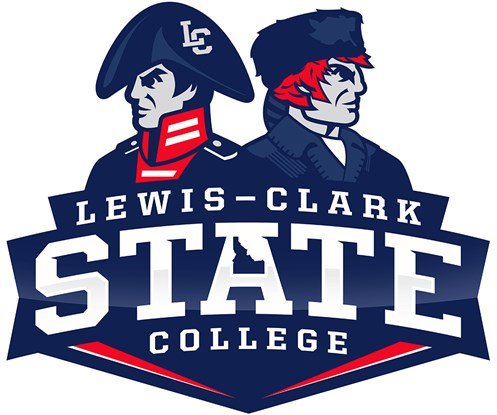

KLCZ is a free-form, non-commercial, educational radio station owned and operated by Lewis-Clark State College students, faculty, and staff and broadcast from Lewiston, Idaho on 88.9 FM at 224 Watts.
Responsibilities for establishing KLCZ programming and underwriting policies and deciding issues related to commentary or program content rest solely on the student staff. The views expressed on air are those of the individual deejays, and not necessarily the view of KLCZ staff. Responsibility for the content of KLCZ is not assigned to nor assumed by the station's advisor or any employee of Lewis-Clark State College.
The Communications Board is a supervising committee that oversees finances and the management of student media. If you would like to find out more please visit them here.

Warrior Entertainment Board

LCSC Athletic Department